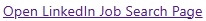
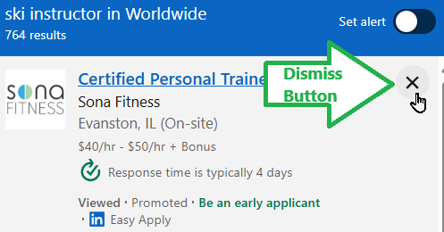

The Filter Editor is designed to appear alongside your LinkedIn job search results page and remain open while
you navigate them.
You can open and close the sidepanel at any time by clicking the extension's icon. To make this convenient,
consider pinning the extension's icon to your browser's toolbar.
What's going on in the screenshot below?
The LinkedIn job search results page is visible on the left.
The Filter Editor is visible in the sidepanel on the right.
On the left, the two Amazon jobs in the "Top job picks for you"
section are shown with a reddish background color because they
were automatically dismissed by a job filter.
On the right, the word "Amazon" appears under the Undesirable
Employer heading. This is the filter that caused the two Amazon
jobs to be automatically dismissed by this extension.
This button lives at the top of the Filter Editor.
(Known issue: synchronizing filters with your other computers is currently disabled due to a
bug.)
Press this button to sync your filters with changes that you might have made in other instances
of this browser on this or on other computers.
A "Open LinkedIn Job Search Page" link.

This link is next to the Refresh button.
Click this link to open https://www.linkedin.com/jobs/
in a browser tab; it's a convenient way to begin or resume your job search.
Here's a scenario that you've probably run into -- it's a scenario that this extension was designed specifically
to address:
LinkedIn shows you results that you're likely to dismiss, no matter how carefully you define your job search
criteria.
You're scrolling or paging through the job search results.
Some are relevant and interesting, and some are not. Some
you're qualified for, and some you're not.
Normally, you can click that little "x" (dismiss) button in the
top-right corner of a search result to ask LinkedIn not to show
you that job anymore.

But the more you search, the more you run into these jobs you won't
or can't apply to. Clicking the dismiss button becomes a chore.
You start to notice patterns among the jobs you quickly dismiss:
Certain employers don't offer any jobs that are interesting to you.
They're contract agencies but you're looking for full-time work.
Certain job titles are not interesting to you.
You're a software tester, but are seeing IT or software programmer jobs.
There are locations that you're not willing to commute or relocate to.
Its easier to get LinkedIn to show you more jobs than to tell it what you don't want to see.
So instead, this extension lets you describe what you're not looking for, and will
automatically dismiss those job search results for you. Read on to learn how.
Example scenario: Searching for "ski instructor" shows unrelated job titles
When I first searched LinkedIn for "ski instructor" positions, among the first 20 results, only one was a ski
instructor and I had to scroll down quite a ways to see it.
The rest were related to physical activity and other
sports, but not skiing. For example: Certified Personal Trainer, Swim Team Coach (Seasonal), and Group Fitness
Instructor.
When you first open the sidepanel, it will look something like this:
Review the search results for "ski instructor" opportunities. If you're lucky, you'll find a job title that
exactly matches "ski instructor", but chances are that many job titles are instead related to other sports,
or use terms like "coach" and "trainer".
Before you define filters that will remove jobs that don't belong, first create a filter that will protect
the jobs you want to pay attention to:
In the Filter Editor (the sidepanel), look for the heading "Desirable Job Titles".
Under that heading, click in the text box that contains "(type here)". The "(type here)" hint will
automatically disappear.
Type "ski instructor" into that text box without the quotation marks.
Press the "✔️" button to add that "I like jobs with this title" filter.
Now define one or more filters that will remove jobs that don't belong.
In the Filter Editor, look for the heading "Undesirable Job Titles".
Under that heading, click in the text box that contains "(type here)". The "(type here)" hint will
automatically disappear.
Into that text box, type one of the undesirable job titles. In my case, one of the
undesirable job titles was "Martial Arts Instructor".
🩷 Protip: It can be powerful to pair a longer, more specific phrase in a "Desirable" filter with a
shorter, less specific phrase in the corresponding "Undesirable" filter. For example:
Desirable Job Title: "ski instructor"
This will prevent the phrase "ski instructor" from being dismissed when it appears in a job
title.
Undesirable Job Title: "instructor"
When a job title contains the word "instructor" but not the phrase "ski
instructor", it will be dismissed. This includes "golf instructor" and "yoga instructor", so
you don't have to specify each undesirable instructor separately!
Press the "✔️" button to add that "I don't like jobs with this title" filter.
Shortly after pressing the "✔️" button, you'll see the page automatically update.
Each job that has a title of "instructor" but not "ski instructor" will be dismissed for you.
Each dismissed job will be shaded pink.
Note that job titles without "instructor", such as "lacrosse coach", are not affected.
And of course the one "ski instructor" position was preserved.
ℹ️ Note that new text appears underneath each job that was touched by a filter. If a title matches
an undesirable filter, the new text will say "Title matches undesirable pattern 'pattern'."
and be shaded orange or reddish. If a title matches a desirable title filter, the new text will say
"Title matches desirable pattern 'pattern'." and be shaded green.
Each LinkedIn job search result generally looks like this:
icon
job title
company name
job location
pay rate
your connections who work here
viewed • promoted • Easy Apply
x
This extension pays attention to the job title, company name, and job location.
For each job on the page:
The extension checks the job title against every undesirable job title filter, looking for a match
as a case-insensitive regular expression. If any match is found, it takes note.
The extension then checks the job title against every desirable job title filter, looking for a
match as a case-insensitive regular expression. If any match is found, it takes note.
This is repeated with the employer name filters and the job location filters.
⚠️ If any undesirable filter matches, but none of the corresponding desirable filters match,
the job is dismissed.
In other words, a desirable employer name match cannot cancel an undesirable job title
match. Only a desirable job title match can prevent an undesirable job title
match from causing a job to be dismissed.
As you interact with the search results, for example by scrolling), LinkedIn can update the contents
of the page without refreshing it. To keep up, this extension will continuously scan the page for changes and apply your filters again to every visible job search result. As a result, especially on infinitely scrolling search results, you might see waves and waves of jobs being automatically dismissed and making room for new ones to scroll into view.


{kind=link}